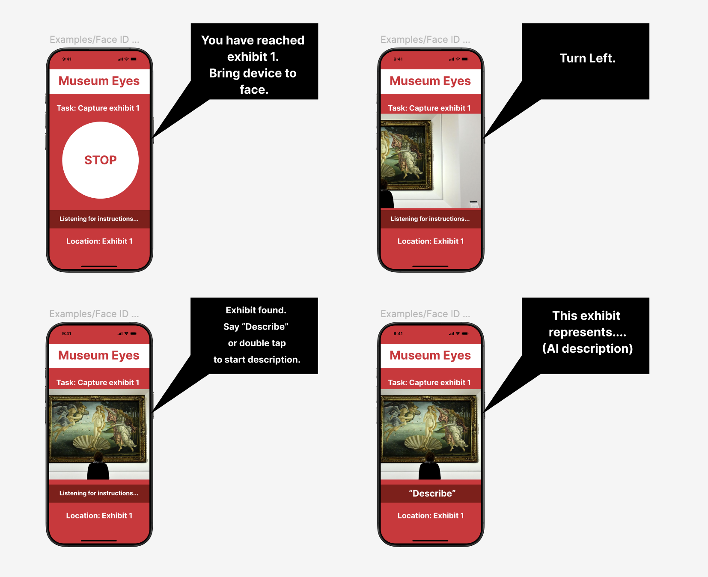

Project Overview
Problem Statement
Museums are inherently visual spaces that often present accessibility challenges for blind and visually impaired visitors. Furthermore, traditional solutions like pre-recorded descriptions or braille text require significant work from museum staff.
Solution
Museum Eyes is a wearable device that serves as a digital museum assistant to help blind people navigate and interpret museum exhibitions. The wearable device interacts with an internal scan of the museum to navigate users, tactile floor patterns to detect exhibits, and AI to generate exhibit descriptions..
Key features include:
- Reliable voice navigation of museum
- Real-time generation of detailed artwork descriptions
- Guided photo-taking using audio cues for optimal image capture
Needfinding Process
Our needfinding process involved extensive research into the challenges faced by visually impaired museum visitors, interviews with accessibility coordinators, and analysis of first-person accounts from blind individuals about their museum experiences.
Research Methodology
- Interviews with Fine Arts Center (FAC) staff
- Literature review of academic papers on museum accessibility
- Analysis of first-person accounts from blind and visually impaired museum visitors
Affinity Diagram
We created an affinity diagram to organize our research findings and identify key themes. The diagram revealed that physical / digital navigation, engagement, and the social experience of museums are the most pressing needs for improving museum accessibility.
Storyboard
Our storyboard illustrates how a visually impaired visitor would interact with our AI-powered alt text generator in a museum setting.
Prototype
This is a mid-fidelity prototype of the Museum Eyes device.
App home screen when starting tour
App screen when accessing exhibit
Demo
We demonstrated our prototype using the Wizard of Oz method as shown through the demo video and snapshots.
User finding an exhibit through tactile floor patterns
User wearing the Museum Eyes Device
User scanning exhibit through Museum Eyes Device